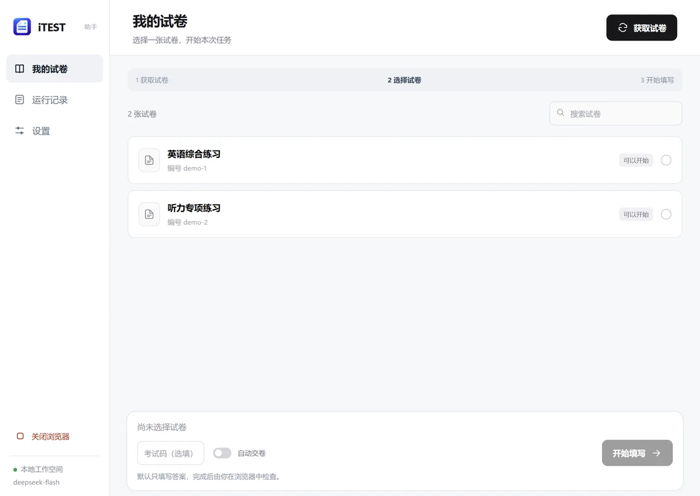
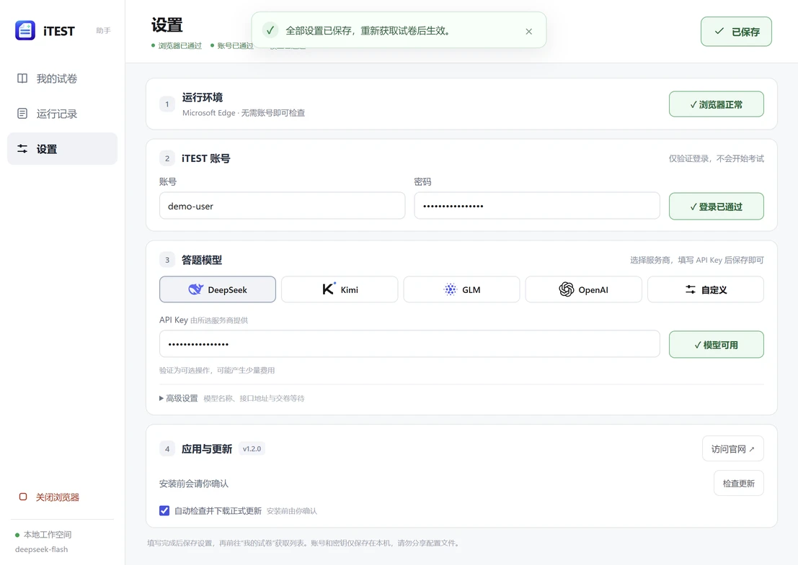

DeepSeekKimiGLMOpenAI
API Key••••••••••••••••••连接已通过
01 / 连接
选好服务商，填入密钥，就绪。
常用接口与默认模型已预填。需要调整模型、地址或获取列表时，再展开高级设置。
连接你的 iTEST 账号与常用模型。
从获取试卷、填写答案，到复核与提交，
让每一步都清楚可见。
Windows 10 / 11 · x64无需安装 Python


少一些来回，多一些清楚
没有层层嵌套的配置，也不用面对一屏滚动的命令。
常用操作摆在眼前，复杂选项留在需要的时候。
常用接口与默认模型已预填。需要调整模型、地址或获取列表时，再展开高级设置。
试卷列表、任务进度与运行记录各有位置。默认填写后等待检查，自动交卷需要你主动开启。
几步开始，不必折腾
下载 Windows 安装包，检查 Edge。首次使用会准备匹配的驱动。
验证 iTEST 登录，选择模型服务商并填写 API Key。保存成功后状态会保留。
选择试卷后确认任务。等待填写完成，在浏览器中检查内容，再决定提交。
边界清楚，使用更安心
账号与密钥保存在当前 Windows 用户目录，官网无需注册。模型请求仍交由你选择的服务商处理。
不是。这是独立开发的开源辅助工具，与 iTEST 官方无隶属或背书关系。应用采用为本项目制作的原创图标。
不需要。Windows x64 安装包已包含运行依赖、离线英语语音模型与 FFmpeg。电脑需安装 Microsoft Edge；缺少 WebView2 时安装程序会提示安装。
目前支持标准单选、多选、下拉、文本填空及多行写作控件，可读取阅读材料与听力转写。口语、图片或视频、富文本和未识别控件会停止处理。模型可能答错，完成后需要复核，不能承诺覆盖全部考试。
软件开源，模型 API 的费用、权限和可用性由所选服务商决定。账号及 API Key 以明文保存在当前 Windows 用户目录，请勿分享配置文件；官网不接收这些信息。
新版软件默认自动检查并下载正式更新，下载完成会核对校验值；安装由你确认，也可在“应用与更新”中关闭自动更新或手动检查。旧版可直接从本站下载安装包覆盖更新。
准备好你的下一张试卷
独立开源 · Windows x64 · AGPL-3.0